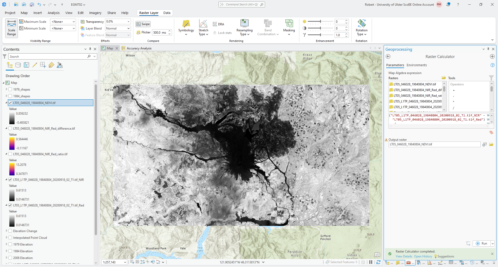
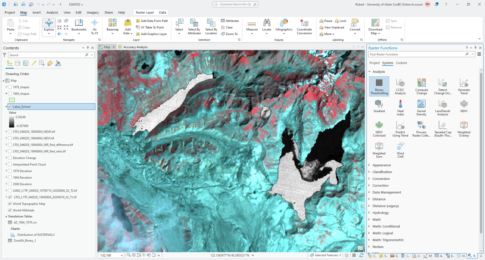

image enhancement and transformation (arcgis)#
In this practical, we’re going to look at some different methods of image enhancement and transformation in ArcGIS Pro, using the 1984 Landsat scene provided for last week’s practical. We will also see how we can combine these methods to help classify water bodies in a satellite image.
In particular, by the end of this practical, you will have done and worked on interpreting the following:
band ratios and differences
normalized difference indices
filtering and thresholding for simple image segmentation
principal component analysis (pca)
getting started#
To get started, open the ArcGIS project that you started last week. Then, open the Catalog, and navigate to the folder with your data.
Find the 1984 TM5 image (LT05_L1TP_046028_19840804_20200918_02_T1.tif), and click the arrow to expand the image and
display the different bands:

Remember that last week, we created a composite image of the near-infrared (TM Band 4), red (TM Band 3), and
green (TM Band 2) bands of this Landsat scene - these have been inserted into the composite raster as Band_1,
Band_2, and Band_3, respectively. To use the near-infrared and red bands, then, we need to add Band_1
and Band_2 to the Map window.
To do this, select the two bands you want to add, then drag them to the Map window. You should see the two bands
added to the Contents panel as LT05_L1TP_046028_19840804_20200918_02_T1.tif_Band_1 and
LT05_L1TP_046028_19840804_20200918_02_T1.tif_Band_2, respectively:

To avoid confusion, I recommend re-naming these bands as LT05_L1TP_046028_19840804_20200918_02_T1.tif_NIR and
LT05_L1TP_046028_19840804_20200918_02_T1.tif_Red, respectively. You can do this by double-clicking on the layer
in the Contents panel, or by right-clicking and selecting Properties. You should see the following window open
up:

Finally, change the Name for each layer as recommended above. Then, update the Symbology for
LT05_L1TP_046028_19840804_20200918_02_T1.tif_Red so that it is the same as
LT05_L1TP_046028_19840804_20200918_02_T1.tif_NIR to make comparing the two bands easier.
Question
Using the false color image, try to identify different surface types (e.g., forest, water, soil, etc.). Then, use the Swipe tool to compare the NIR and Red bands.
What surface types show big differences between one band and the other? Are there any surfaces that look the same in both bands (e.g., both show low reflectance or high reflectance)? What does this imply about the reflectance of each surface type?
band maths#
The idea behind using different band maths operations (e.g., difference or ratio) is to help highlight or enhance the differences between different surface types. To help illustrate this, we’ll calculate the NIR-Red ratio and NIR-Red difference for this image, and compare the results for the different surface types we identified previously.
Open the Raster Calculator. To calculate the ratio of the NIR and Red bands, we use the following formula:
"LT05_L1TP_046028_19840804_20200918_02_T1.tif_NIR" / "LT05_L1TP_046028_19840804_20200918_02_T1.tif_Red"
Save the output to your data folder as LT05_046028_19840804_NIR_Red_ratio.tif, then click Run. After a moment,
you should see the ratio appear in the Map window. Change the Symbology to another color scheme (I have chosen
“Plasma” in the example below):

Now, let’s look at the difference between these two bands. Again using the Raster Calculator, enter the
following formula to calculate the difference between the NIR and Red bands:
"LT05_L1TP_046028_19840804_20200918_02_T1.tif_NIR" - "LT05_L1TP_046028_19840804_20200918_02_T1.tif_Red"
save the output as LT05_046028_19840804_NIR_Red_difference.tif, and change the Symbology to use the same color
scheme as you chose for the ratio image:
{kind=link}
Question
Compare the two images. What are the differences that you can see between these two images? Do they show the same thing, or are there differences in what is highlighted?
For each surface type you identified earlier, try to identify corresponding values of the NIR-Red difference and NIR-ratio. Are there clear differences between each surface type?
normalized difference indices#
You have hopefully noticed that in general, the NIR band is brighter (has higher reflectance) than the Red band for this particular scene - this is why, for example, the false color composite you created last week appears mostly red.
We have seen two ways of enhancing the differences between these two bands: the ratio, and the difference. The difference in magnitude means that directly comparing the reflectance in both the NIR and Red bands can be challenging - areas with low reflectance in both bands will show small differences which can be difficult to distinguish.
By taking a normalized difference1, we can enhance the differences between the two bands while also controlling for differences in the magnitude of reflectance between the two bands, which makes it easier to compare scenes acquired at different times of the year or under different illumination conditions.
You have likely already seen this example, the normalized difference vegetation index (NDVI)2, which is used to distinguish between healthy vegetation and other surfaces. The NDVI is calculated as:
where \(\rho_{\rm NIR}\) and \(\rho_{\rm Red}\) are the reflectance in the NIR and Red bands, respectively.
To calculate the NDVI, open the Raster Calculator and enter the following formula:
("LT05_L1TP_046028_19840804_20200918_02_T1.tif_NIR" - "LT05_L1TP_046028_19840804_20200918_02_T1.tif_Red") / ("LT05_L1TP_046028_19840804_20200918_02_T1.tif_NIR" + "LT05_L1TP_046028_19840804_20200918_02_T1.tif_Red")
Save the output as LT05_046028_19840804_NDVI.tif.
When the tool finishes running, you should see the NDVI raster appear on the Map:
{kind=link}
Change the color scheme to a divergent color scale, and change the stretch so that the values range between -1
and 1.
Question
Compare the NDVI to the NIR-Red difference. What differences do you notice? In which raster is it easier to distinguish between the two large lakes and the landslide area north of the volcano?
Compare the NDVI values for the two large lakes north of the volcano, and the two larger lakes at the southern edge of the scene. What differences do you notice? Why do you think this is?
Now, we’ll look at another example of a normalized difference spectral index: the normalized difference water index (NDWI)3, calculated as:
where \(\rho_{\rm Green}\) and \(\rho_{\rm NIR}\) are the reflectance in the Green and NIR bands, respectively.
To calculate the NDWI for this scene, first add the green band (TM5 band 2) from this scene. To do this, you can open
the catalog as you did earlier, then add Band_3 from the false color composite image. Rename this layer to be
LT05_L1TP_046028_19840804_20200918_02_T1.tif_Green, then enter the following formula in the Raster Calculator:
("LT05_L1TP_046028_19840804_20200918_02_T1.tif_Green" - "LT05_L1TP_046028_19840804_20200918_02_T1.tif_NIR") / ("LT05_L1TP_046028_19840804_20200918_02_T1.tif_Green" + "LT05_L1TP_046028_19840804_20200918_02_T1.tif_NIR")
and save the output as LT05_046028_19840804_NDWI.tif. When the raster loads in the Map window, change the color
scheme to a diverging color map, and change the stretch so that the values range between -0.5 and 0.5:

Question
Zoom in on a few different lakes to the north of the volcano.
Using the Explore tool under the Map tab, try to identify a good boundary (or threshold) value that helps separate the open water of the lakes from other surface types.
Make a note of this value, as we’ll check your result against other ways of selecting a threshold value.
filtering and segmentation#
In this part of the practical, we’re going to see how we can use some different tools to create polygons representing surface water in the Landsat image.
choosing a threshold#
The first thing that we need to do is choose a suitable threshold, which means we need to isolate NDWI values that we
know correspond to surface water. Here, we’ll use the 1984_shapes layer to help us do this.
In the NDWI layer, you should see that one of the lakes, South Fork Castle Creek Lake, has a higher NDWI value than the other lakes to the north of the volcano. This is because the lake is partly obscured by thin clouds, and it means that using the NDWI values for this lake won’t give us the best result. To avoid this, we will use the other three lakes to help select a good threshold value for surface water.
Using Select by Rectangle, select the other three lakes in the 1984_shapes layer.
Now, open the Extract by Mask tool in the Geoprocessing panel. For the Input raster, use the NDWI
raster you created earlier. For the Input raster or feature mask data, select the 1984 Lake shapefile
(1984_shapes), and make sure that Use the selected records is selected, and that the number of records is 34:

Save the output to your project geodatabase as Lakes_Extract, and make sure that Extraction Area is set to
Inside. Click Run - you should see the NDWI values, but with areas outside of the 1984 lake outlines masked:

Now, right-click on the layer in the Contents panel, and select Create Chart > Histogram:

Now, under Variables in the Chart panel, select Band_1 from the drop-down menu. This should show a
histogram of the values in the NDWI layer within the 1984 Lake outlines:

Question
Look at the histogram. What do you notice about the values? Is there a good value that seems to divide the histogram into two halves/parts?
How does this compare to the threshold value that you wrote down earlier?
Hopefully, you should agree that the NDWI values are bi-modal (the histogram has two peaks). At this point, we could choose a threshold based on this visual inspection. We will use something called Otsu’s method5 to estimate a threshold value, and compare this to what you have estimated from the visual inspection.
Otsu’s method helps to segment (divide) an image into “light” and “dark” pixels based on the variance of the values in the two groups. In ArcGIS Pro, Otsu’s method is available as the Binary Thresholding function in the Raster Functions panel:
{kind=link}
Open the Binary Thresholding function, and select your Lakes_Extract layer as the Raster. Click
Create new layer - you should see a new Binary_Thresholding_Lakes_Extract layer added to the Map:

Note
You may need to change the symbology of this layer to Classify, as I have done in the screenshot above, to consistently see two classes in the image.
For the next step, you will need to export the layer to a file - right-click on the layer in the Contents panel,
then select Data > Export Raster. Save the output as Binary_Thresholding_Lakes.tif. Once the exported
image loads, remove the original binary thresholding layer from the map.
Note that the output of Binary Thresholding is a thresholded version of the original raster layer. Because we want to know the threshold value to use in a different layer, we need an additional step to be able to find the value used as a threshold.6
Open Zonal Statistics as Table. The Input Raster or Feature Zone Data should be the exported binary thresholding layer, and Zone Field should be Value.
The Input Value Raster should be Lakes_Extract. Use the default
output name for the Output Table, and make sure that Statistics Type is set to All:

Click Run, then open the table (right-click on the table from the Contents panel, then Open). You should
see a table with two rows, corresponding to a value of 0 or 1 in the binary thresholding layer.
A good approximation of the actual calculated threshold value should be between the MAX value for value 0 (the “dark” objects) and the MIN value for value 1 (the “light” objects). For example, in this table:

the MAX value for the dark objects is 0.03934, and the MIN value for the light objects is 0.040981 - so,
0.04 would be a good value to use for the threshold value.
Question
How does the value that you wrote down earlier compare to the value you can see in the table?
At this point, you can remove Lakes_Extract and Binary Thresholding_Lakes.tif from the map.
applying a threshold#
Now that we have a threshold value, we can use the Raster Calculator to apply this thresholding to the raster as a whole.
Open up the Raster Calculator, and insert the following equation:
Con("LT05_046028_19840804_NDWI.tif" > THRESH, 1)
Make sure to replace THRESH with the value you got from your table. This uses the Con() function to apply a
value of 1 to any cell in LT05_046028_19840804_NDWI.tif where the value is greater than THRESH, and a value of
0 to any cell where the value is less than (or equal to) THRESH.
Save the output to your project geodatabase as water_classified, then click Run.
Once the raster has loaded, you might want to change the symbology so that the layer is more visible (depending on the color that ArcGIS has chosen for the layer):

Question
Have a look at the result - how has this approach done for mapping surface water bodies? Are there any areas of obvious misclassification? Why do you think this may be?
cleaning up the outputs#
Hopefully you agree that while the results here aren’t perfect, they are at least usable. Now, we’ll see how we can apply different filtering options to improve the classification, before ultimately converting the raster to a polygon.
The first approach we’ll look as is Focal Statistics, which is a form of convolution filter that calculates
some statistical value within a given window and outputs this to the new raster. Open the Focal Statistics tool in
the geoprocessing panel and select water_classified as the Input raster.
Save the output raster to your project geodatabase as focal_median_3. For the Neighborhood, choose Circle
with a Radius of 3 and a Units type of Cell.
Under Statistics type, choose Median, and make sure that Ignore NoData in calculations is checked.
Click Run, then move the output layer so that it is below water_classified in the Contents panel:

Now, repeat the previous step but use a Circle with Radius 3 as the Neighborhood. Save the output
focal_median_1. When the tool finishes processing, move the output layer so that it is between focal_median_3
and water_classified in the Contents panel.
Question
Zoom in on some of the different lakes / water bodies. What do you notice about the filtered layers, compared to the original?
A median filter can be a very useful filter for smoothing classifications, but it can also cause some classified areas to grow, especially with a binary classification. While this has served to fill in some of the small holes present in some of the lakes, it has also caused the area classified as water to grow outside of the boundary in the image.
One other approach that we will use here is a closing7 operation, which can be used to remove small amounts of noise in an image. In ArcGIS, this is done using the Boundary Clean tool. First, continuous areas in the image are grown (a dilation), then shrunk (an erosion). The result is that small regions inside of larger regions are removed.
To see how this works for our classified water mask, open the Boundary Clean tool in the Geoprocessing panel.
The Input raster should be water_classified, and save the Output raster as water_mask.tif in your
data folder. Ensure that Sort type is set to Do not sort, and uncheck Run expansion and shrinking twice.
Click Run. You should see the cleaned classified mask output to the Map window:

Question
Compare the outputs of the Boundary Clean and Focal Statistics tools with the original imagery. Which of these outputs has done a better job of mapping surface water bodies, without going outside the boundary of the water body in the original image?
principal component analysis#
In the last part of this week’s practical, we’re going to have a look at using principal component analysis (PCA) to help analyze what is in an image. We will do this using all of the available (non-thermal) Landsat bands, which means we will need to first convert the band values to TOA reflectance values, then composite them into a single raster.
We have already done this in last week’s practical for TM bands 2, 3, and 4 - this means that you will need to repeat this for TM bands 1, 5, and 7 (skipping the thermal band, TM band 6). As before, load each of these bands into your Map, then use the Raster Calculator to apply the following formula:
making sure to use the values of \(M_\rho\) (REFLECTANCE_MULT_BAND_X),
\(A_\rho\) (REFLECTANCE_ADD_BAND_X), and \(\theta_{\rm SE}\) (SUN_ELEVATION) from the MTL.txt file.
For example, the formula to use for TM band 1 should be:
(1.1164E-03 * "LT05_L1TP_046028_19840804_20200918_02_T1_B1.TIF" - 0.003644) / Sin((3.1415926 / 180) * 53.03707434)
Save each band to the project geodatabase using the same naming convention as you did before - band 1 should be
tm5_band1_toa, band 5 should be tm5_band5_toa, and band 7 should be tm5_band7_toa.
Once you have each band converted, open the Principal Components tool by searching for it from the Geoprocessing panel, or by finding it in the Spatial Analyst Tools.
Add each of the 6 TM bands (1 - 5 and 7) as the Input raster bands in the order shown in the screenshot below. Save
the Output multiband raster to your data folder as LT05_L1TP_046028_19840804_20200918_02_T1_PCA.tif, and save
the Output data file, which contains the covariance and correlation matrices, as well as the eigenvalues and
eigenvectors, to LT05_L1TP_046028_19840804_20200918_02_T1_PCA_params.txt. The tool inputs should look like this:
{kind=link}
Tip
If you do not have all 6 TM bands loaded in your map window, you can either load them before adding them to the list of Input raster bands, or you can click on the folder icon next to the text box. Navigate to the geodatabase where you saved the converted bands, then load them as you would normally.
Click Run. After a few moments, you should see the results open in the map window:
{kind=link}
Question
What is the dominant color that you see here? What does that tell you about the dominant principal component values for the image? Do you notice anything different between the western half of the image and the eastern half?
What color does the water appear in this image? Again, think about what that means in terms of the principal component values for the water surfaces.
Next, open up the LT05_L1TP_046028_19840804_20200918_02_T1_PCA_params.txt file output from the tool and scroll down
to the last section, EIGENVALUES and EIGENVECTORS.
You should notice that the eigenvalues drop off considerably after the first eigenvalue (corresponding to the first principal component band), which implies that a majority of the information in the scene is contained in just the first principal component band, and in fact ~99.6% of the information of the scene is captured by the first 3 principal components.
Question
From the Catalog pane, load each of the PCA bands individually (alternatively, change the symbology for the PCA raster to Stretch and look through each band individually. What do you notice about the different bands?
Compare the first and the second principal component bands. What surface types seem to have a higher value in the first principal component band, compared to the second?
Look at the last principal component band (Band 6). What do you notice about this band, compared to the others?
next steps#
In this practical, you’ve gotten some practice using different image enhancement techniques, and seen an example of how we can combine these approaches to perform a binary classification and map water bodies. You might also have noticed that the results of this binary classification include a number of spurious results, especially in shadowed areas.
As a next step, you can use Raster to Polygon to convert your water_mask.tif layer to a polygon layer, and edit
the results of this to remove incorrectly mapped water bodies.
You could also use this as a basis to manually edit the water bodies - for example, Spirit Lake, which is only partially mapped due to the presence of floating logs and debris in the lake.
Tip
If you have chosen to study the changes in lakes / water bodies in the area around Mt St Helens for your project, this could be one approach to take to help map water bodies at other points in time.
If you have chosen another topic for your project, you could still use this basic approach, perhaps modified to focus on using the NDVI or some other index.
notes#
- 1
“normalized” in this case means shifting and scaling the values, which makes them easier to compare to other images acquired under different conditions. You have seen examples of normalization before (for example, in calculating percentages, where values are scaled to fit between 0 and 100). Here, we’re scaling the values to fit between -1 and 1. Later, we will discuss how this is done to facilitate machine learning techniques such as support vector machine (SVM).
- 2
Rouse, J.W., et al. (1974). Proceedings, 3rd Earth Resource Technology Satellite Symposium, 1, 48-62. https://ntrs.nasa.gov/citations/19740022614
- 3
McFeeters, S. K. (1996). Int. J. Rem. Sens., 17(7), 1425-1432. doi: 10.1080/01431169608948714 Note that this is one of two normalized difference water index formulas; the other one is used to monitor vegetation water content, rather than open water bodies.
- 4
No more, no less. Five is right out.
- 5
Otsu, N. (1979). IEEE Trans. Systems, Man, Cybernetics, 9(1), 62–66. doi: 10.1109/TSMC.1979.4310076. See also https://learnopencv.com/otsu-thresholding-with-opencv
- 6
To see why we couldn’t just use Binary Thresholding on the original NDWI layer, run this function on the NDWI layer. You should hopefully notice that there is no clear split between the lakes and the rest of the image.
- 7
For more information about morphological operations like this, the wikipedia entry is quite good. The
scikit-imagepython package also has a good visual guide, as does OpenCV.